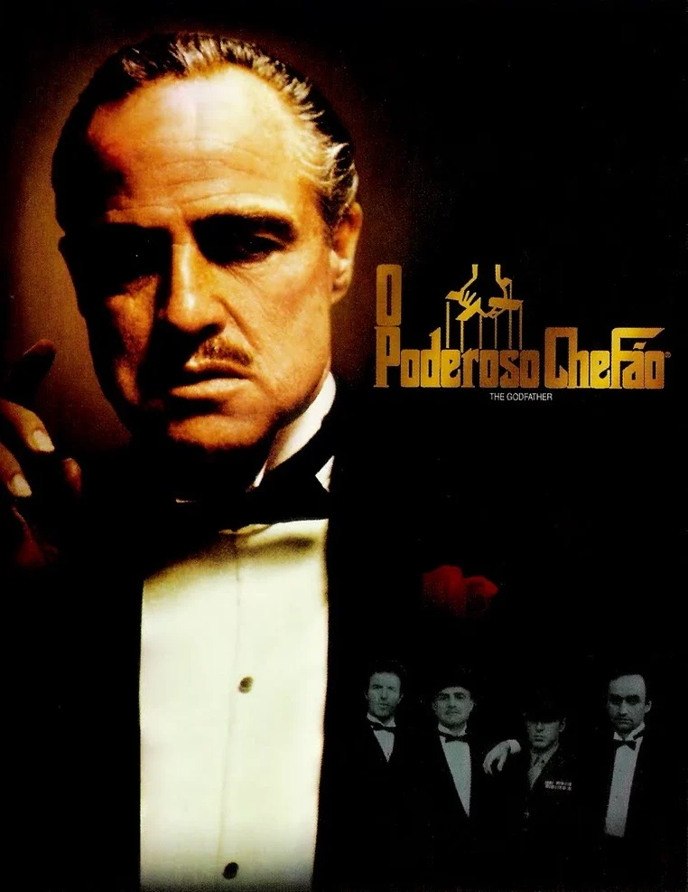

O Poderoso Chefão (1972)
Diretor: Francis Ford Coppola
Resumo: A história épica da família Corleone.
Diretor: Francis Ford Coppola
Resumo: A história épica da família Corleone.
Diretor: Frank Darabont
Resumo: A amizade e a luta por liberdade de dois prisioneiros.

Diretor: Christopher Nolan
Resumo: Batman enfrenta o Coringa em uma batalha por Gotham.